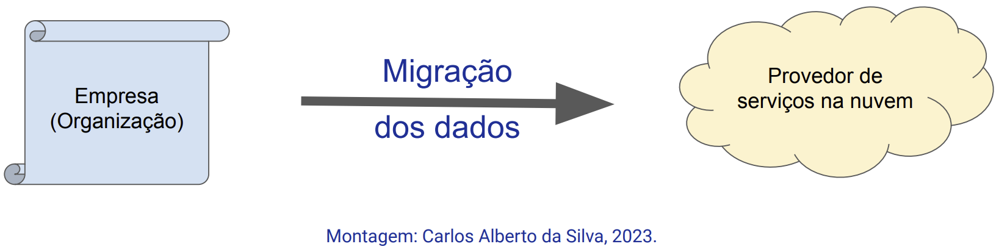
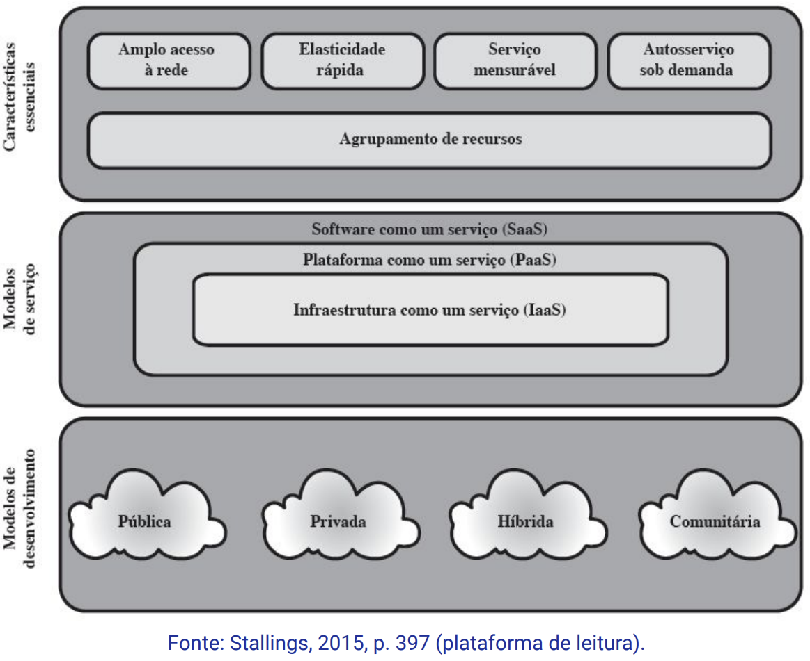
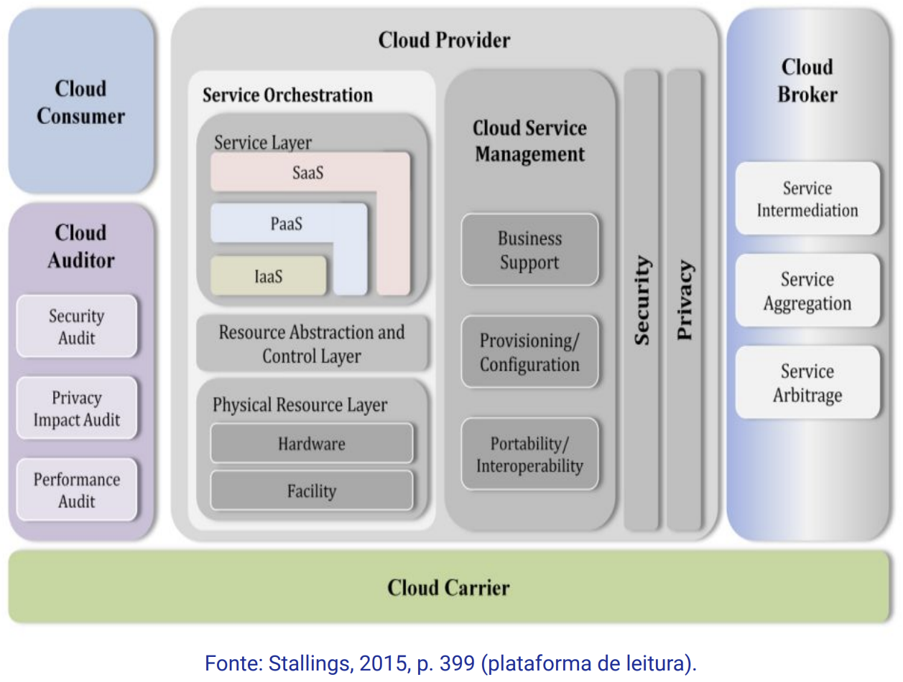
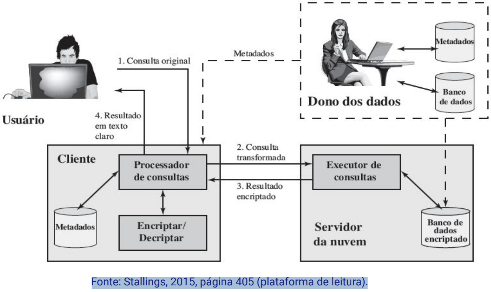
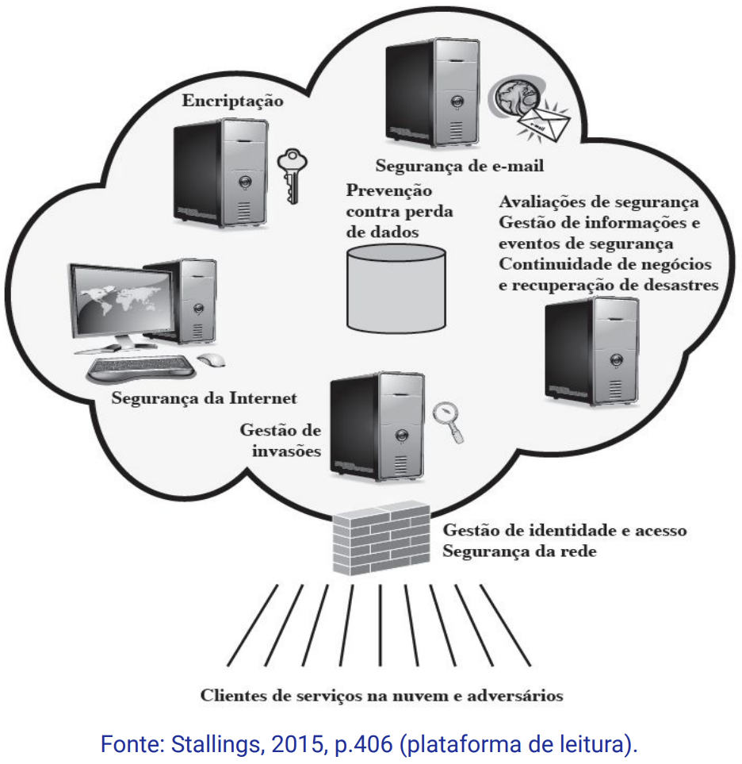
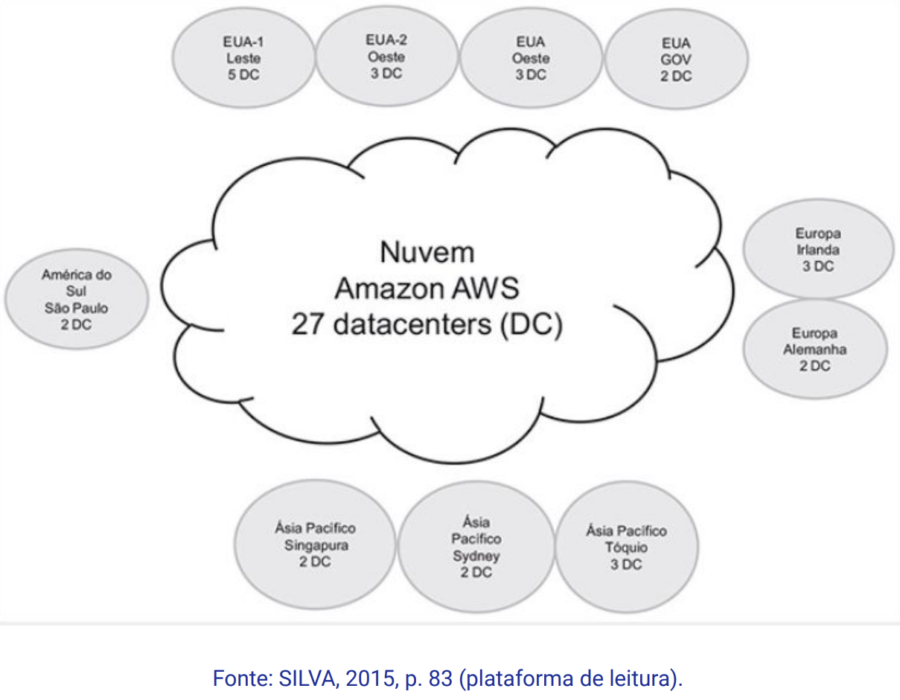

Disciplinas
INFRAESTRUTURA PARA SISTEMAS DE SOFTWARE Concluído
Materiais
Vídeo 1 - [UFMS Digital] Infraestrutura para Sistemas de Software - Módulo 4 - Unidade 1 - As características dos serviços na nuvem computacional sendProf.° ministrante: Carlos Alberto da Silva
Conteúdo
As características dos serviços na nuvem computacional
- Histórico
- Elementos da computação em nuvem
- Arquitetura de referência
- Infraestrutura de TI nas nuvens
- Segurança na nuvem
- Infraestrutura de serviços
Histórico
As primeiras iniciativas a respeito do escopo de computação como serviços é oriunda de Remote Job Entry Process (RJE)
Em 2006, a Amazon® disponibilizou a primeira nuvem pública para processar jobs (aplicações):
- Pagamento pelo uso de recursos computacionais (rede, disco, memória, CPU) como serviço.
- Computação em Grade
- Processamento paralelo
- Computação Utilitária
- Recursos computacionais como serviços medido
- Computação como Serviço
- Assinaturas baseadas em rede para aplicativos
Elementos da computação em nuvem
TendênciaAtualmente mover uma parte ou todas as operações de tecnologia da informação (TI) para uma computação em nuvem.
O NIST (2013) define computação em nuvem como:
"Computação em nuvem: um modelo para permitir acesso via rede, a partir de qualquer lugar, de forma conveniente e sob demanda a um pool compartilhado de recursos computacionais configuráveis (por exemplo, redes, servidores, armazenamento, aplicações e serviços) que podem ser rapidamente provisionados e liberados com um esforço mínimo de gerenciamento ou interação com o fornecedor dos serviços."
NIST define- Características essenciais da computação em nuvem:
- Amplo acesso à rede;
- Elasticidade rápida;
- Serviço mensurável;
- Auto serviço sob demanda;
- Agrupamento de recursos.
Contrato de nível de serviço (SLA)
 Modelos de serviço para contratar no SLA:- Software como um serviço (SaaS);
- Plataforma como um serviço (PaaS);
- Infraestrutura como um serviço (IaaS).
- Nuvem pública.
- Nuvem privada.
- Nuvem comunitária.
- Nuvem híbrida.
O provedor de serviços na nuvem mantém:
- um enorme grupo de servidores e servidores blade;
- gerenciamento de rede para:
- monitoramento;
- redundância;
- ferramentas de segurança.
Arquitetura de referência
Principais atores:
- Consumidor da nuvem.
- Provedor da nuvem.
- Auditor da nuvem.
- Agente da nuvem.
- Operador da nuvem.
Contrato de nível de serviço (SLA)
 Benefícios- Reduz a complexidade da rede de comunicação.
- Reduz a compra de licenças de software.
- Possibilidade de customização de hardware.
- Aumenta a escalabilidade, confiabilidade.
- Foco na segurança do armazenamento, na replicação e políticas eficientes de backup.
Infraestrutura de TI nas nuvens
Provedores de serviços na Nuvem- SaaS
- Office365®, Dropbox®, Google Drive®, OneDrive®, etc.
- PaaS
- Google App Engine®, Amazon EC2®, Microsoft Azure®.
- laaS
- Rackspace®, Amazon EC2®.
Um data center é instalação física que abriga a infraestrutura de TI para:
- desenvolvimento, teste e execução de aplicativos e serviços.
- gerenciar os dados compartilhados associados a esses aplicativos e serviços.
- Os principais componentes do design de um Data center incluem:
- roteadores;
- switches;
- firewalls;
- sistemas de armazenamento;
- servidores e controladores de disponibilização de aplicativos.
Segurança na nuvem
Riscos e contramedidas de segurança na nuvem- Controles de segurança na computação em nuvem são similares aos controles de segurança tradicionais de TI.
- mas apresentam riscos que são específicos ao ambiente da nuvem.
- O cliente de serviços de nuvem perde, consideravelmente, o controle sobre recursos, serviços e aplicações.
- Mas mantém a responsabilidade pela política de segurança e privacidade.
Exemplo de encriptar um banco de dados na nuvem
Estas categorias de serviços em SecaaS são oferecidas:
- Gestão de identidade e acesso;
- Prevenção contra perda de dados;
- Segurança da Internet, da rede e dispositivos;
- Gestão de informações e eventos de segurança;
- Gestão da Criptografia;
- Políticas de segurança;
- Planos de recuperação de desastres, de continuidade de negócios, de continuidade operacional, etc.
Gestão da segurança
Infraestrutura de serviços
Data center da Amazon AWS® no mundo Serviços oferecidos pela AWS® são:
- Serviços de rede (conexão);
- Serviços de segurança (firewall, incluem também IDS e IPS);
- Serviços de processamento;
- Serviços de armazenamento;
- Serviços de virtualização;
- Serviços de aplicação;
- Serviços de alta disponibilidade e recuperação de desastres.
Modelo de infraestrutura de serviços oferecidas nas nuvens

Os provedores de serviços em nuvem computacionais atuais baseiam-se em tecnologias definidas por software para:
- Data center;
- redes;
- armazenamento.
⇒ Virtualização do Data center incluindo todos os dispositivos.
⇒ Tudo definido cada vez mais pelo software.
Referências:
NIST 2013. National Institute for Standards and Technology of The NIST Definition of Cloud Computing (NIST Special Publication 800-145). Disponível em: http://csrc.nist.gov.
SILVA, Fernanda R.; SOARES, Juliane A.; SERPA, Matheus S.; NETO, Roque M.; JUNIOR, José F. M. A.; OLIVEIRA, Hygo S.; Pichetti, Roni F. Cloud Computing. Editora Soluções Educacionais Integradas, 2020. p. 13-30. E-book. ISBN 9786556900193. Disponível na Biblioteca Digital da UFMS.
STALLINGS, William. Criptografia e segurança de redes: princípios e práticas. 6. ed. São Paulo: Pearson, 2015. ISBN: 9788543005898. p. 396-407. Disponível na Biblioteca Digital da UFMS.